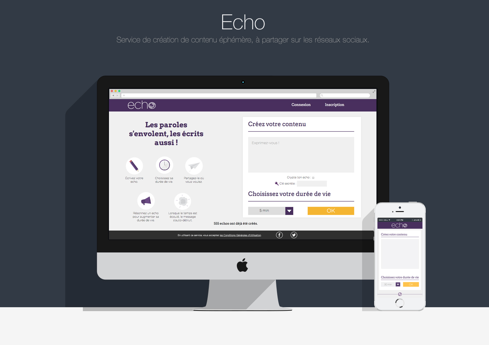
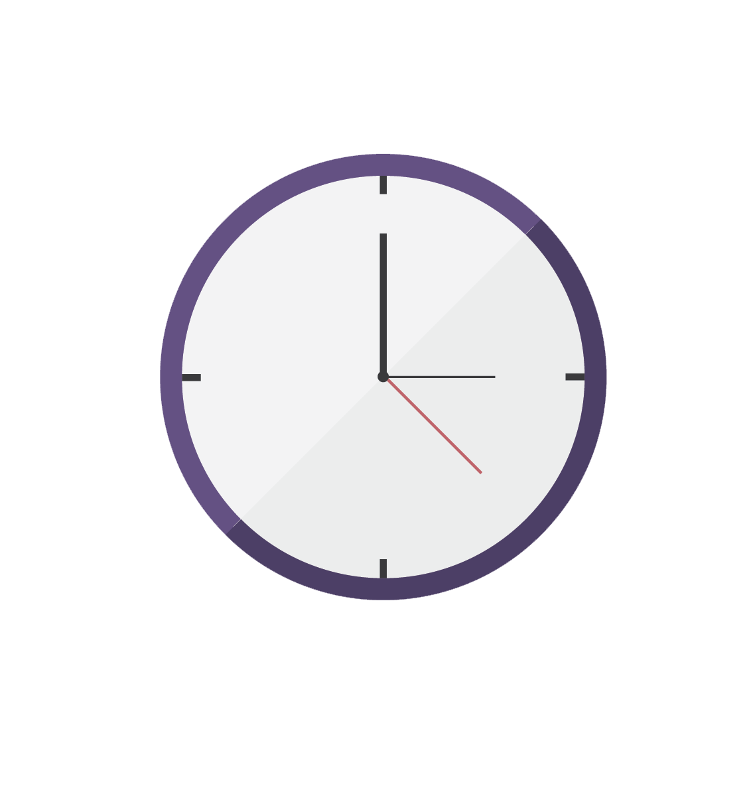
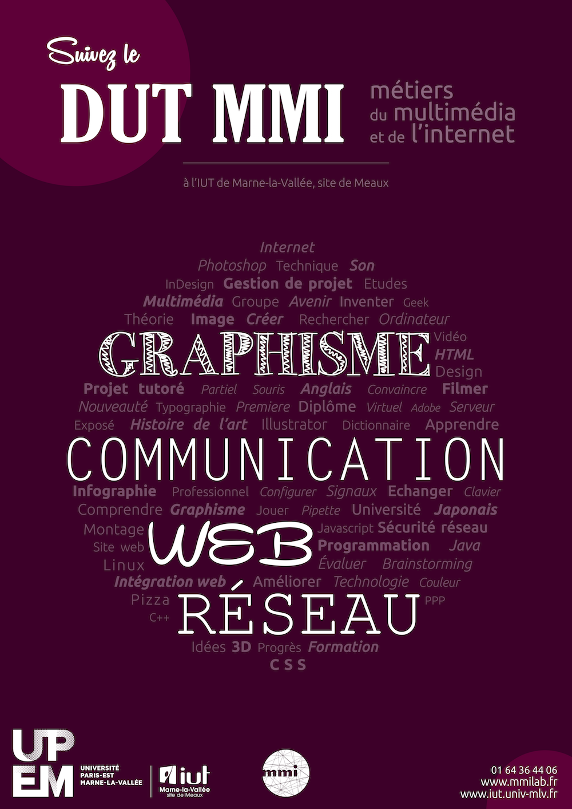
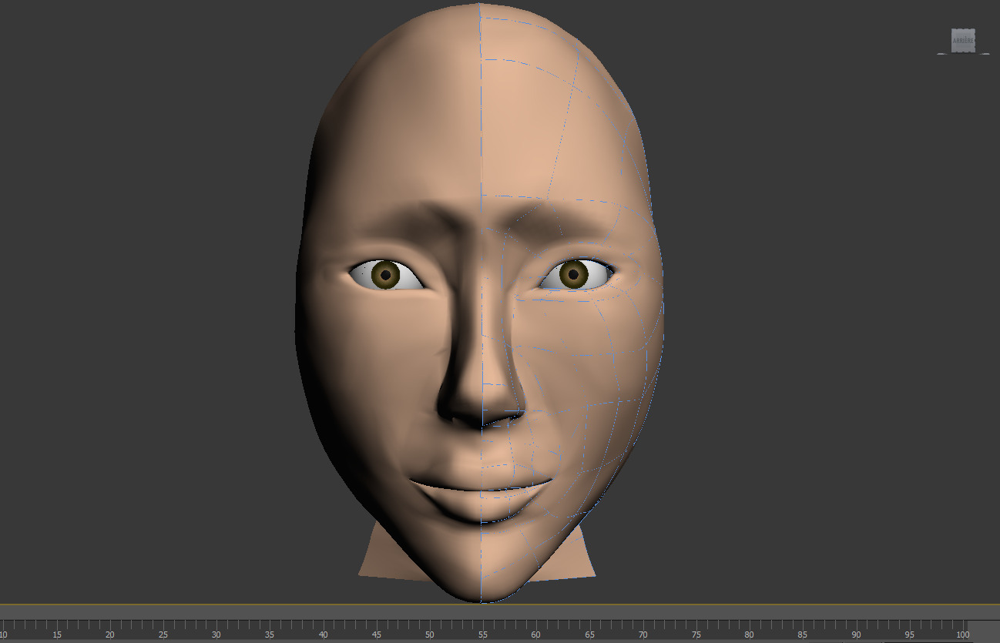
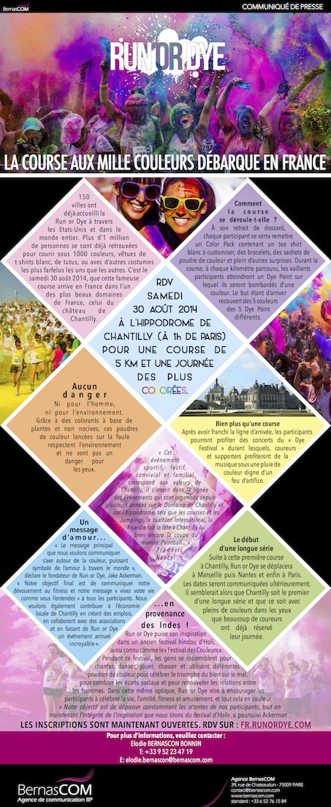
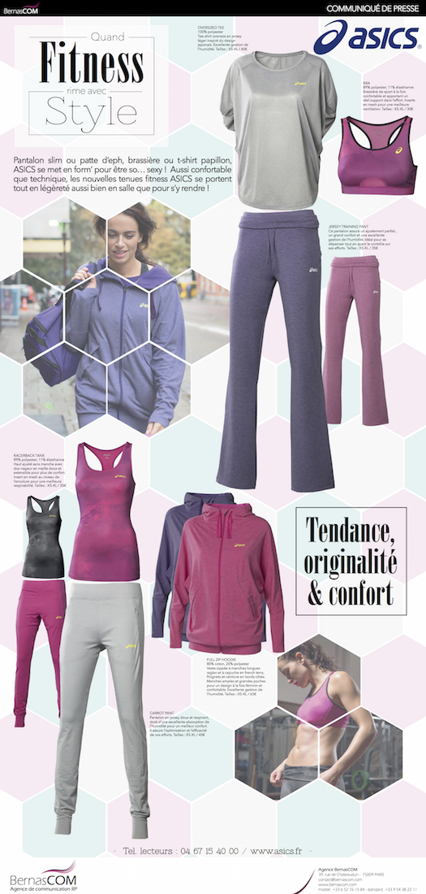

TRAVAUX
Bon, commençons. Voici la partie où je vous vous présente des travaux et projets en tous genres. Il y en aura pour tous les goûts alors faites comme chez vous et laissez votre curiosité vous guider !

ECHO
Echo, c'est le projet le plus important auquel j'ai pris part. Avec deux autres étudiants de mon DUT MMI, nous avons créé un service luttant pour la protection des données personnelles sur Internet. Echo permet de créer du contenu éphémère et de le partager.
Mon rôle dans ce projet était principalement la création graphique du site et de ses composantes, ainsi que l'intégration web. Le service est disponible sur socialecho.fr
CRÉATION D'ICÔNES

CRÉATION DE VIDÉOS PROMOTIONNELLES
Cette vidéo a été réalisée sur After Effect, dans le cadre de la sortie imminente du site Echo. Nous souhaitions attiser la curiosité des internautes en ne leur dévoilant pas tout le concept avant la mise en ligne.
Le but de celle-ci était d'expliquer le concept d'Echo. Elle a été diffusée sur les réseaux sociaux après la mise en ligne du site. C'était ma première création en Motion Design, toujours sous After Effect.

AFFICHE DE PROMOTION
On a demandé aux étudiants de ma formation de créer une affiche promotionnelle pour le DUT MMI. Bon, voilà ce que ça m'évoquait : une formation complète, avec beaucoup d'éléments la composant, prenant plus ou moins de place. Et l'ensemble, formant quelque chose d'uni. Les typographies utilisées pour les mots principaux représentaient ce qu'ils m'inspiraient.
Cette affiche a été réalisée sur InDesign et exposée aux Journées Portes Ouvertes de mon IUT (épatant).

MODÉLISATION D'UN VISAGE 3D
Voici mon premier visage modélisé en 3D : Nathalie ! Oui, parce qu'à la base, elle devait ressembler à Nathalie Portman. Mais bon, je suis déjà contente qu'elle ressemble à un être humain. Il lui manque quelques poils par-ci par-là, et sans doute un peu de joie et de bonne humeur.
Ce travail a été effectué avec 3DS MAX, dans le cadre d'un cours de modélisation 3D.


COMMUNIQUÉS DE PRESSE
Ces communiqués de presse sont quelques exemples des travaux que j'ai effectué lors de mon stage de première année de DUT MMI. Celui-ci était principalement axé sur le graphisme web, avec ce genre de travaux pour différents produits, différentes marques et différentes attentes de clients et des lecteurs.
Mon stage dans cette agence de relation-presse spécialisée dans le sport/bien-être a duré un mois.
TOURNAGE ET MONTAGE
Nous avions 4h pour faire une publicité sur le produit de notre choix. Nous avons choisi LA paire de chaussures qui aurait tous les critères de la paire parfaite, en mettant cela en avant avec des cascades impressionnantes et des démarches viriles (plus ou moins). Cette vidéo a été montée sur Adobe Premiere Pro.